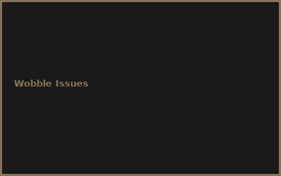
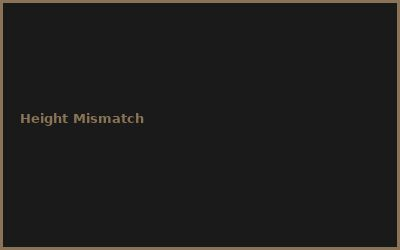
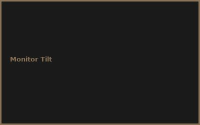
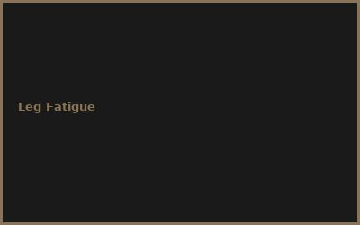

Kapitel 1: Benefits of Standing
- Sitting = 8 hours health risk
- Standing = circulation boost
- Better posture + energy
- Calorie burn improvement
Kapitel 2: DIY Build
# DIY Standing Desk Converter
# Monitor riser frame €12
# Adjustable legs (gas lift) €10
# VESA mounting plate €3
# Wood platform €3
# Total: €28 for converter
Kapitel 3: Height Adjustment
- Gas lift mechanism (smooth)
- Manual crank option (cheaper)
- Optimal standing height (elbows 90°)
- Sitting height adjustment
Kapitel 4: Stability & Support
- Wide base = balance
- Weight distribution
- Anti-wobble feet
- Monitor weight limits
Kapitel 5: Keyboard & Mouse Setup
- Tray positioning (ergonomic)
- Elbow support options
- Wrist alignment
- Floating desk integration
Kapitel 6: Healthy Work Habits
- Sit/stand alternation (30min)
- Anti-fatigue mat benefits
- Stretching routines
- Long-term health tracking
💡 PRO-TIPPS
🎯 Tipp: 30-Minuten Regel!
Problem: Immer stehen = neue Probleme | Lösung: 30min sit, 30min stand
💰 BUDGET-HACKS (97% SPAREN!)
💰 Hack: DIY Converter statt Motor
Original: Electric desk: €800+ | Hack: DIY converter: €28 | Einsparnis: 96%
⚠️ FEHLER
❌ Fehler: Zu schneller Wechsel
Was passiert: Bein-Ermüdung | ✅ Lösung: Langsam aufbauen + Anti-Fatigue Mat
🌐 COMMUNITY
r/standingdesk, Ergonomics Forum, Office Workspace Community, Health & Fitness Groups
📸 Fehler-Galerie



